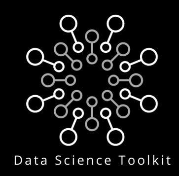

{%- assign default_paths = site.pages | map: "path" -%} {%- assign page_paths = site.header_pages | default: default_paths -%} {%- if page_paths -%}

Data Science Toolkit
{%- for path in page_paths -%} {%- assign my_page = site.pages | where: "path", path | first -%} {%- if my_page.title -%}
{{ my_page.title | escape }}
{%- endif -%} {%- endfor -%}
search
{%- endif -%}